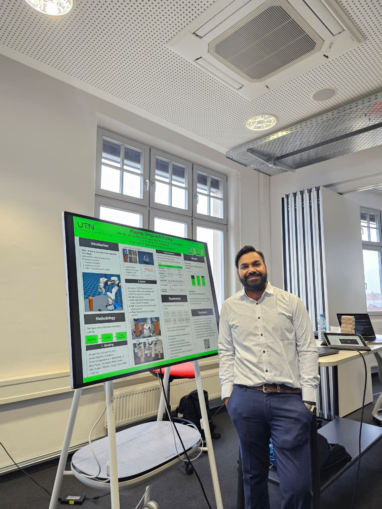
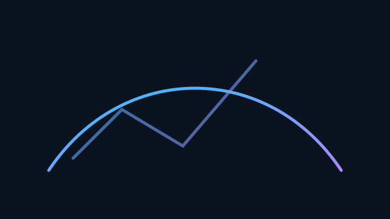
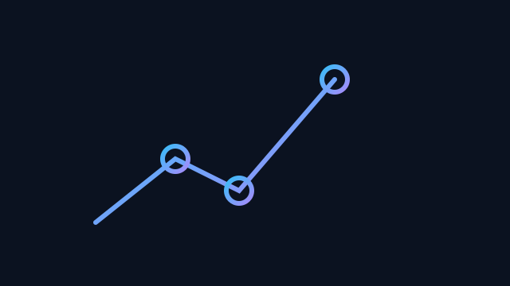

Robotics & Sim2Real
Building and validating simulation-to-robot pipelines with ROS, Isaac, MuJoCo, PyBullet, Gym, URDF, and manipulation tasks.
Building intelligent systems for robots that perceive, reason, and act.
My work sits at the intersection of simulation, perception, learning, and deployment.
I am an AI & Robotics Engineer who can move between research prototypes and working systems. My work spans robot simulation, perception, model optimization, LLM/VLM agents, and embedded deployment, with current focus on Sim2Real and Real2Sim transfer at JARM.AI.
Interested Areas: AI & Robotics | ML | Computer Vision | LLM / VLM / VLA | Physical AI | Simulation | Generative AI.

Building and validating simulation-to-robot pipelines with ROS, Isaac, MuJoCo, PyBullet, Gym, URDF, and manipulation tasks.
Training, evaluating, and deploying CV systems for detection, segmentation, tracking, HCI, and real-time perception.
Fine-tuning and optimizing foundation models with LoRA, PEFT, prompt engineering, quantization, agents, and multimodal workflows.
Improving Vision Transformer efficiency using a dynamic patch selection framework that finds informative patch subsets and integrates with CLIP.
Focus: adaptive token pruning, patch selector training, and efficient vision-language inference.
Implemented Faster‑RCNN, Mask‑RCNN, and DETR with a PyTorch/OpenCV stack, benchmarking trade‑offs across manufacturing and sports datasets.
Focus: model implementation, evaluation discipline, and production-oriented CV tooling.

Collected camera + sensor data and trained end‑to‑end behavioral cloning models in the Udacity simulator, covering perception through low-level control.
Focus: autonomy pipeline thinking from data collection to control behavior.
Explored diffusion-based generators that propose performant hyperparameters, improving training efficiency for vision backbones.
Focus: experimental ML research applied to model selection and optimization.
End‑to‑end pipeline for degraded multi-length CAPTCHAs using ResNet encoders and Transformer decoder heads with heavy data augmentation.
Focus: robust data generation, sequence modeling, and degradation-aware training.
OAK-D powered pipeline for ball/player detection, trajectory smoothing, and rally analytics.
Focus: real-time perception, tracking, and analytics for noisy sports video.
Assistive HCI system mapping gaze vectors to cursor trajectories with fast calibration and smoothing for hands-free access.
Focus: user-centered CV deployment on constrained hardware.

Programmed the FR3 to manipulate a Jenga tower; Gym wrapper and MuJoCo sim pipeline for data collection.
Focus: manipulation, simulation design, robot control, and data collection.
Robot simulation for pick‑and‑place using PyBullet and OpenAI Gym; designed reward shaping and task curriculum.
Focus: robotics environments, task design, and reinforcement learning foundations.
Stop-sign detector fused with CO2 telemetry on Raspberry Pi + Arduino hardware, streaming alerts over ROS.
Focus: sensor integration across CV, ROS, and embedded hardware.
Fine-tuned a Huggingface LLM with LoRA/PEFT to answer student FAQs, benchmarked accuracy, and wrapped findings into a deployment guide.
Focus: practical LLM adaptation, evaluation, and documentation for users.
Applied INT8/INT4 post-training quantization to Tarsier2 using BitsAndBytes, slashing inference latency and memory use.
Focus: model compression and deployment-aware multimodal inference.
LLM agent that composes BabyAI instructions using Qwen2.5-7B + gpt-4o-mini prompting to solve grid-world tasks.
Focus: agentic reasoning, prompt engineering, and task-based evaluation.
Tool using SAM2 to segment subjects and remove backgrounds in videos, exposed via a RunPod API with Celery workers for async jobs.
Focus: full-stack ML service design with async inference and hosted compute.
Delivered ML/CV solutions end-to-end for robotics, sports, and assistive tech clients.
I am open to ML engineering, AI engineering, robotics engineering, and research-oriented roles where simulation, perception, and foundation models meet real systems.